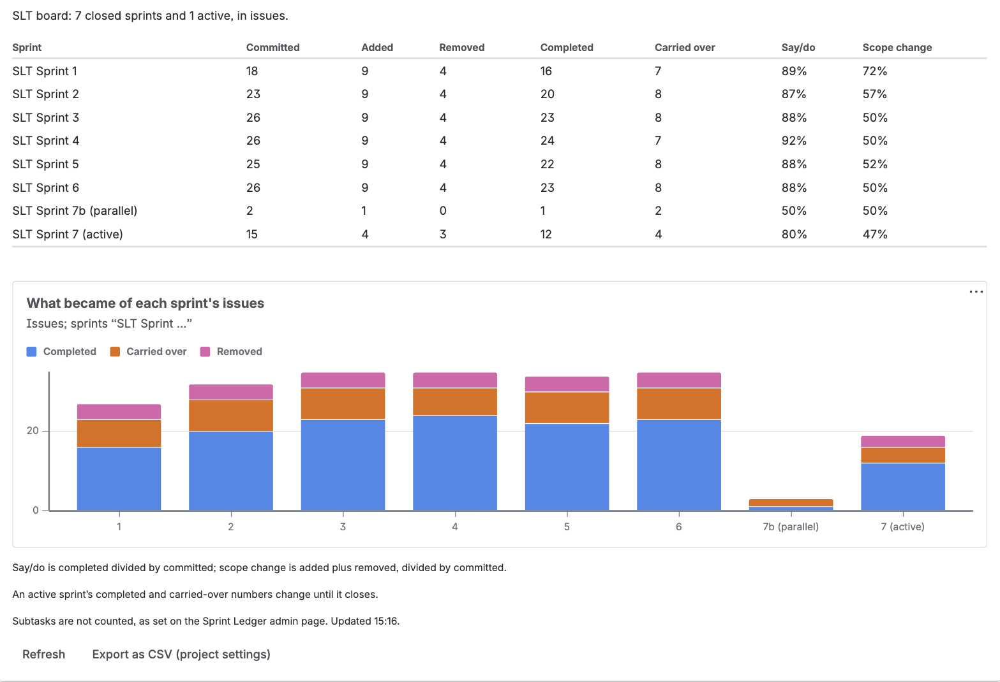

Sprint scope and say/do (Ledger) shows, for one board, what each of its recent sprints committed to, what changed after the start and what became of it, with two ratios a sprint review or a retrospective asks about.

The gadget reads best in a wide column; in a narrow one the table's headings wrap. It reloads its numbers every 30 minutes, so it also works on a wallboard, and Refresh reloads them at once.
| Column | What it counts |
|---|---|
| Committed | Issues in the sprint when it started |
| Added | Issues that joined after the start |
| Removed | Issues taken out after the start, including ones added and taken out again |
| Completed | Issues in the sprint at completion whose status counted as done |
| Carried over | Issues in the sprint at completion that were not done |
| Say/do | Completed divided by committed |
| Scope change | Added plus removed, divided by committed |
These are the same definitions the JQL functions use, so a number can always be opened as a list: Committed is issue in committedTo("…"), Added is issue in addedAfterSprintStart("…"), and so on (JQL functions). An active sprint's completed and carried-over numbers are provisional and change until it closes. An issue that was already done when the sprint started is in neither, because Jira's report counts it as completed outside the sprint; the gadget's footer says so when a sprint shown has one. Subtasks are counted only if an administrator has turned that on, which the gadget's footer says.
What became of each sprint's issues stacks, per sprint, the issues that were completed, carried over and removed. Those three never overlap and together cover every issue that was in the sprint, so the height of a bar is everything the sprint held; committed and added are not stacked, because they describe the same issues a second way and would count each one twice. The labels under the bars leave out the words every sprint name shares, which the chart's subtitle names. The colours were chosen to stay distinguishable for colour-blind viewers, in both of Jira's themes.
Instead of a table the gadget can show a notice:
| Notice | Why |
|---|---|
| You cannot see this board, or it no longer exists. | The numbers come from the app's storage, so the gadget first asks Jira whether you can see the board, and shows nothing if you cannot. |
| Sprint Ledger does not track this board's project. | Its project is turned off. The project's administrators can turn it on in the project settings page. |
| This board's history has not been read yet. | The project's administrators can read it from the same page. |
| Reading this board's history: … Until it finishes, the numbers are incomplete. | A reconstruction is running; the notice shows its stage and progress. |
| This board does not use sprints. | A Kanban board has no sprints to count. |
Export as CSV (project settings) opens the board's project page, where the same numbers download as one row per sprint, or one sprint as one row per issue with who added or removed it and when. See CSV export.